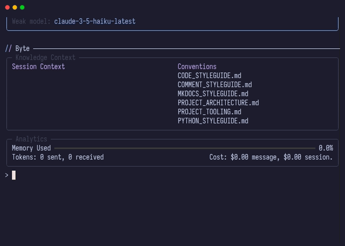

File Context
The file context acts as the AI's "workspace" - only files added to the context are visible to the AI. This design gives you precise control over what the AI can access and change, preventing unwanted modifications and reducing noise in the AI's decision-making.

File Modes
Byte supports two access modes for files in context:
Read-Only Mode
Files added as read-only are visible to the AI for reference but cannot be modified. The main use case is to add files you want the AI to be aware of but not change.
Command: /read-only <file_path>
Editable Mode
Files added as editable can be modified by the AI through SEARCH/REPLACE blocks.
Command: /add <file_path>
Adding Files
Single Files
Add individual files by specifying their path relative to the project root:
Multiple Files with Wildcards
Use glob patterns to add multiple files at once:
> /add src/models/*.py
Added src/models/user.py (editable)
Added src/models/post.py (editable)
Added src/models/comment.py (editable)
Supported patterns:
*- matches any characters in a filename**- matches directories recursively?- matches a single character[seq]- matches any character in seq
Examples:
> /add tests/**/*.py # All Python test files
> /add src/domain/*/config.py # All config.py in domain subdirectories
> /read-only docs/*.md # All Markdown files in docs
Viewing Context
List All Files
See all files currently in context:
This displays two panels:
- Read-Only Files - Files available for reference
- Editable Files - Files the AI can modify
Before Each Prompt
Byte automatically displays the current context before accepting your input, so you always know what files the AI can access.
Removing Files
Single Files
Remove a file from context when it's no longer needed:
Multiple Files with Wildcards
Remove multiple files using patterns:
This removes all Python test files from the context.
File Discovery
Byte automatically discovers all files in your project on startup, respecting .gitignore patterns. This enables:
- Tab completion - Press Tab while typing file paths to see suggestions
- Fast lookups - File operations use a cached index for performance
- Automatic filtering - Git-ignored files are excluded from suggestions
The discovery service:
- Scans your project directory recursively
- Loads
.gitignorepatterns and configuration ignore rules - Builds an in-memory index of available files
- Updates the index when files change (if file watching is enabled)
Ignore Patterns
Files are automatically excluded based on:
.gitignorerules - Standard git ignore patterns from your project's.gitignorefile- Configuration patterns - Custom ignore rules defined in
.byte/config.yaml
You can add additional ignore patterns in your .byte/config.yaml:
These patterns use gitignore-style syntax and are combined with your .gitignore rules. Patterns support:
*- Wildcard for any characters**- Matches directories recursively?- Single character match- Negation with
!prefix - Directory-specific patterns with trailing
/
See the Settings Reference for complete configuration options.
Best Practices
Start Small
Begin with only the files directly related to your task:
Add more files as needed rather than loading everything upfront.
Use Read-Only Strategically
Add reference files as read-only to provide context without risking unwanted changes:
Context in AI Prompts
When the AI receives your message, Byte includes a structured context block with all files:
# Here are the files in the current context:
## READ-ONLY FILES (for reference only):
---
source: config.yaml
mode: read-only
---
[file contents]
## EDITABLE FILES (can be modified):
---
source: src/main.py
mode: editable
---
[file contents]
This format helps the AI understand:
- What files are available
- What permissions it has for each file
- The current state of each file
Related Concepts
- File Watching - Automatic context updates when files change
- Conventions - Project-specific guidelines automatically included in context
- Settings Reference - Configuration options for file handling